1 / 13
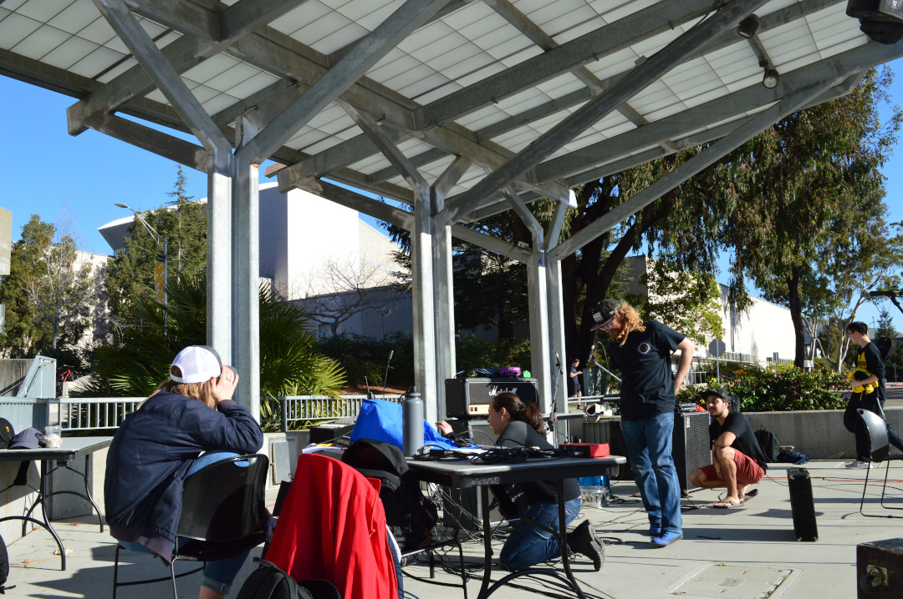
Members of Cal Poly’s Music Production Union, Audio Engineering Society and ASI begin to set up the mix of speakers, microphones, instruments, mixing equipment and lighting needed for the MPU’s annual Winter concert in the UU.
2 / 13
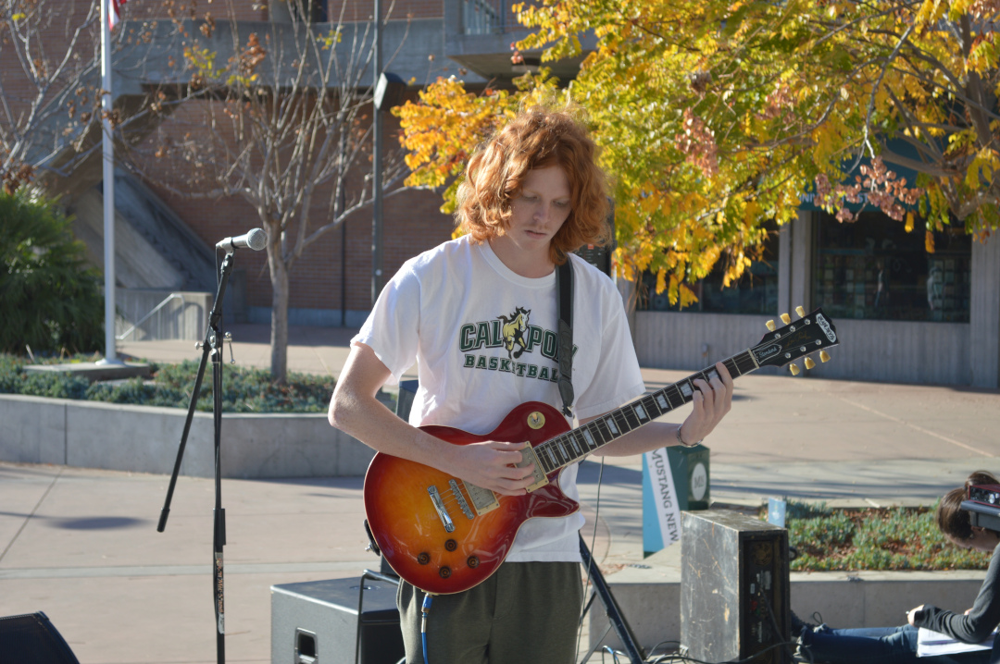
5th-year philosophy major Jack Bylund test-strums a guitar. While not performing in the concert himself, he offered his time to help the MPU set up.
3 / 13
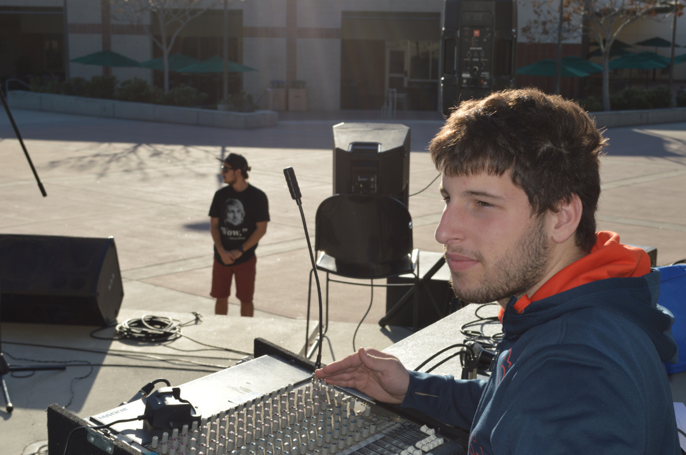
Cuesta College student Tirron (background) checks speakers while AES secretary and 3rd-year mechanical engineering major David Lanfranconi (foreground) adjusts their settings before the show. Explaining how crucial audio engineering is during a concert, Lanfranconi states, “Good performance depends on good audio engineering.”
4 / 13
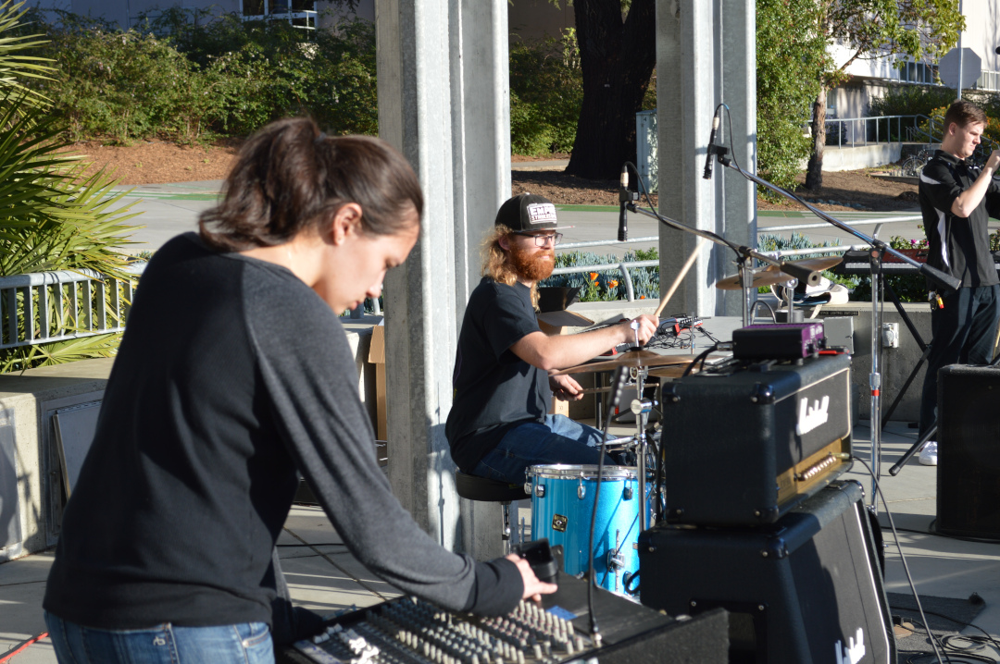
AES member and 3rd-year mechanical engineering major Holly Johnson (left) balances mics and speakers while MPU vice president and 4th-year electrical engineering major Ryan Morris (right) plays with the drumset. When asked for a quote, Morris decided to quote Bugs Bunny: “Never take life seriously. Nobody ever gets out alive.”
5 / 13
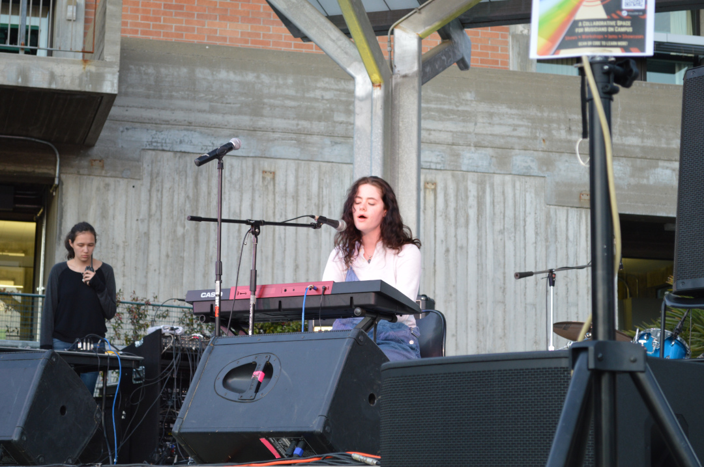
Zoe Carpenter opens the show, covering Frank Ocean on the piano.
6 / 13
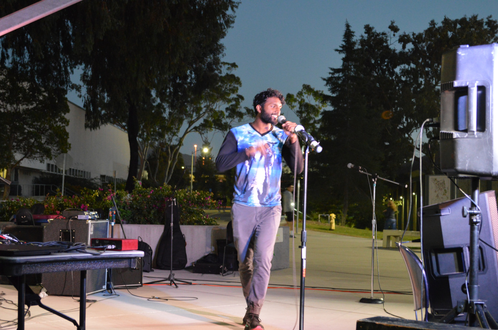
Space Koupe, real name Navin Kuppamala, spits the fire during his set.
7 / 13
Lou Moss debuts an original song with acoustic guitar and foot tambourine (not shown).
8 / 13
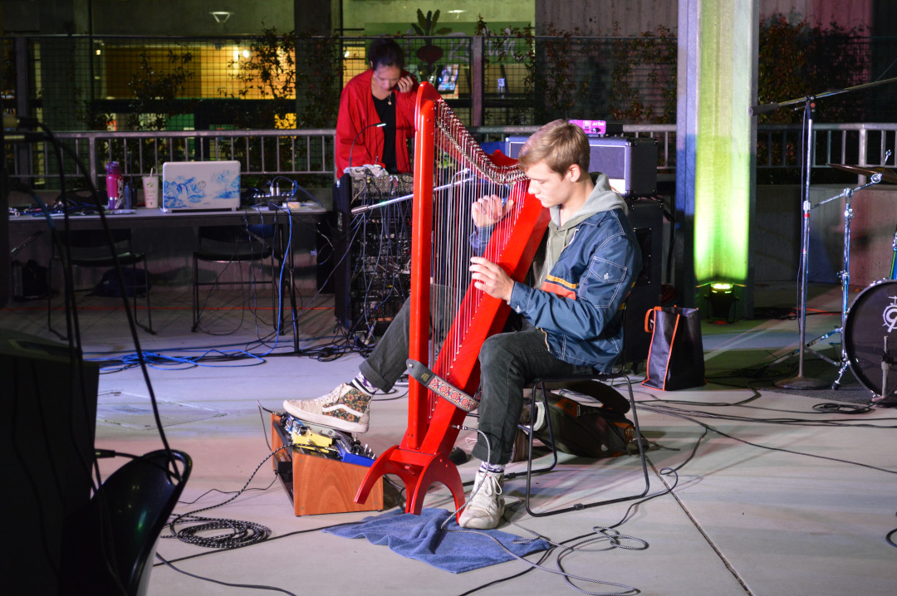
Jack Butler performs on the harp. According to Ryan Harris, Butler was the first ever to perform the harp at any MPU event.
9 / 13
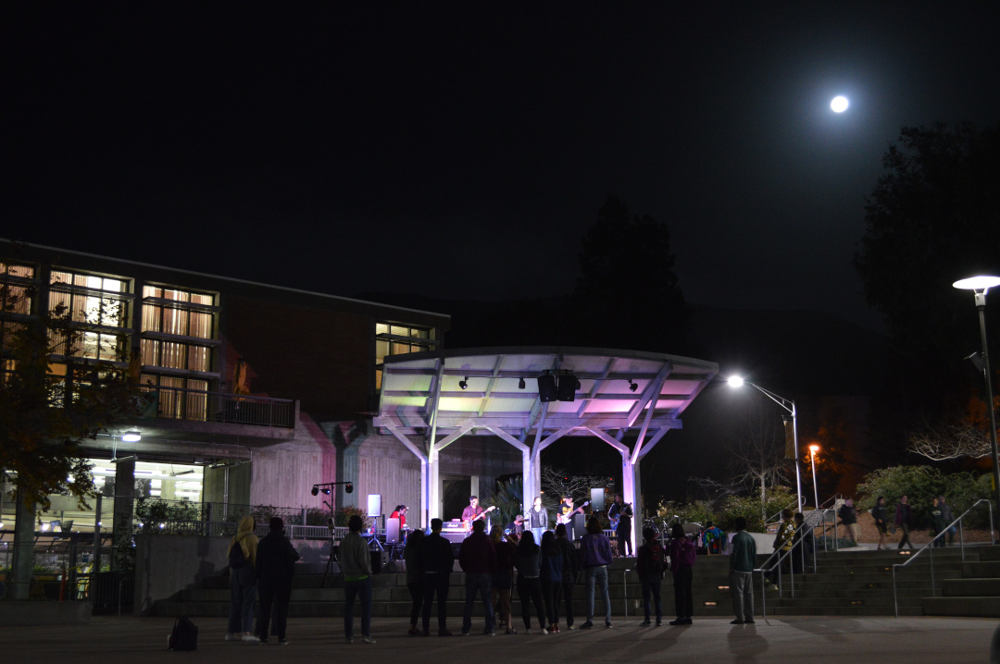
The band Universal Lease performs under the light of a waxing gibbous moon.
10 / 13
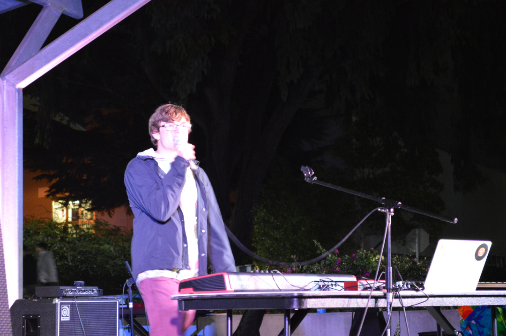
“What are your fffeeeaaarrrrsss??”, asks The Elaborate Owl, real name Johnny Schreiber, while performing an original song. He introduced the song as being inspired by Plato’s Allegory of the Cave, and its call to step beyond your boundaries.
11 / 13
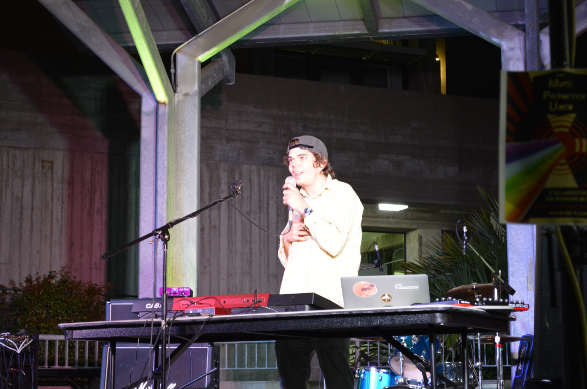
Blossomoon, real name David Schreiber and brother of Johnny, sings about his past struggles with vaping addiction, falling in love and subsequent heartbreak.
12 / 13
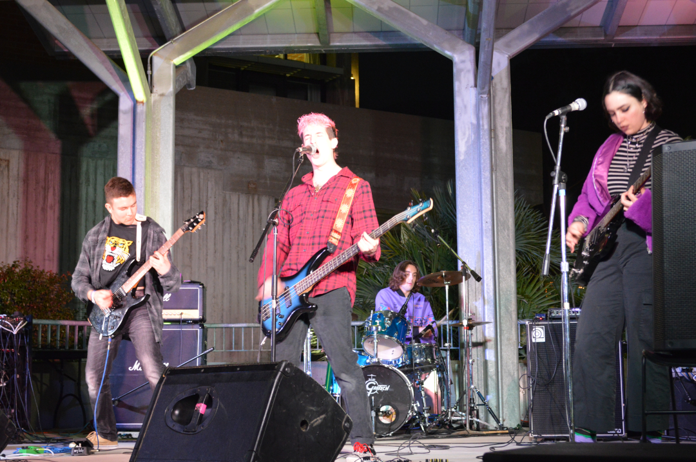
SPY closes out the night’s performances with a mix of punk covers and harsh vocals.
13 / 13
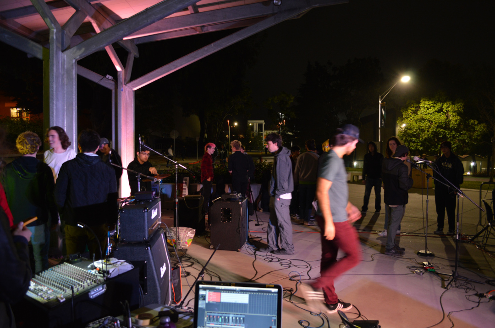
The MPU has many from the crowd volunteer to help tear down and pack up the show once it’s finished.
❮
❯